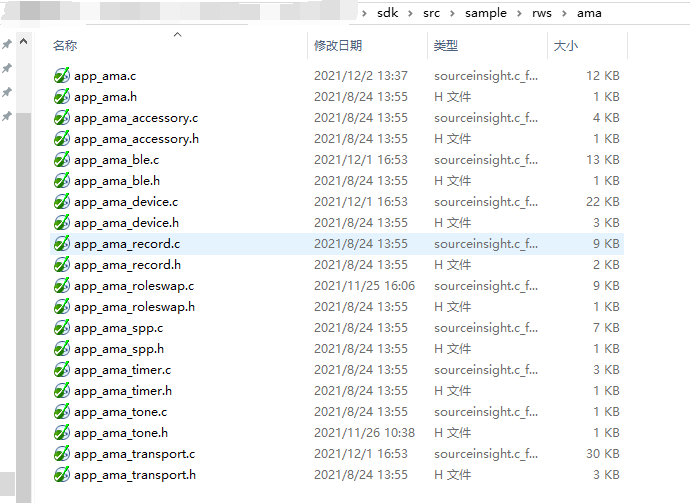

AMA Application Note
V1.0.0.2
2022/08/15
Revision History
| Version | Date | Description |
| V1.0.0.0 | 2021/10/21 | Stable Release |
| V1.0.0.1 | 2021/11/26 | Stable Release |
| V1.0.0.2 | 2022/08/15 | Stable Release |
Contents
Table List
Figure List
Glossary
| Terms | Definitions |
| AMA | Alexa Mobile Accessory |
1 Environment Configuration
To use the AMA service, a 'Alexa' application should be installed on user's phone. The app is available on both Android and iOS. User's can install it from corresponding application store of the phone.
1.1 Enable AMA
You can enable AMA by the checkbox. AMA ID is an identifier dispatched by amazon for produce manufactor.
Figure 1-1 enable AMA in MCU Config Tool
. For IAP transport, IAP switch on HW Feature page should be chosen and CP chip pin should also be assigned.
Figure 1-2 checkbox for iAP
.
Figure 1-3 assign pin for CP chip
.
1.2 Assign the key for AMA
You should assign the pin for a key and associate a mmi with the key.
Figure 1-4 assign P2_4 and P2_5 for KEY1 and KEY2
.
Figure 1-5 assign Alexa Wakeword for key 2
.
2 Hardware wiring
2.1 Connect I2C interfaces assigned to CP chip
Figure 2-1 connect CP chip on eval board
.
2.2 Connect Microphone and Jumper as The Picture below
Figure 2-2 MIC and its jumper on eval board
.
2.3 jump for the key assigned for AMA
3 Firmware Configuration for AMA
3.1 Add AMA Files
Copy three folders of 'bin', 'src', and 'inc' provided in '3rd_service_ama' to 'sdk/'.

Figure 3-1 AMA source files

Figure 3-2 header files for ama library
3.2 Macro for AMA Feature
AMA_FEATURE_SUPPORT is a macro for AMA. Please enable it in app_flags.h
#if (TARGET_RTL8773CO|TARGET_RTL8763COM)
#undef F_APP_IAP_SUPPORT
#define F_APP_IAP_SUPPORT 1
#undef F_APP_IAP_RTK_SUPPORT
#if F_APP_IAP_SUPPORT
#define F_APP_IAP_RTK_SUPPORT 1
#else
#define F_APP_IAP_RTK_SUPPORT 0
#endif
#undef F_APP_BLE_SWIFT_PAIR_SUPPORT
#define F_APP_BLE_SWIFT_PAIR_SUPPORT 1
#undef GFPS_FEATURE_SUPPORT
#define GFPS_FEATURE_SUPPORT 1
#undef AMA_FEATURE_SUPPORT
#define AMA_FEATURE_SUPPORT 0
#undef BISTO_FEATURE_SUPPORT
#define BISTO_FEATURE_SUPPORT 1 //Set the BISTO_FEATURE_SUPPORT as 1
#undef XM_XIAOAI_FEATURE_SUPPORT
#define XM_XIAOAI_FEATURE_SUPPORT 1
#undef F_APP_LOCAL_PLAYBACK_SUPPORT
#define F_APP_LOCAL_PLAYBACK_SUPPORT 1
#endif
3.3 Main Settings for AMA Device
The word 'device' refers to both ends of the AMA application while 'accessory device' is specially refers to our eval board. There are two main settings in app_ama_accessory.c:
- app_ama_accessory_info: This function includes name, serial number, device type(ama id) and supported transports. The name is derive from BREDR name from MCU Config Tool.
static void app_ama_accessory_info(void)
{
char *serial_number = "1234567890";
pb_size_t supported_transports_count = 0;
Transport supported_transports[DEVICE_SUPPORTED_TRANSPORTS_COUNT_MAX] = {(Transport)0};
supported_transports_count = 0;
if (app_ama_transport_supported(AMA_SPP_STREAM))
{
supported_transports[supported_transports_count] = Transport_BLUETOOTH_RFCOMM;
supported_transports_count++;
}
if (app_ama_transport_supported(AMA_BLE_STREAM))
{
supported_transports[supported_transports_count] = Transport_BLUETOOTH_LOW_ENERGY;
supported_transports_count++;
}
if (app_ama_transport_supported(AMA_IAP_STREAM))
{
supported_transports[supported_transports_count] = Transport_BLUETOOTH_IAP;
supported_transports_count++;
}
ama_set_device_info(serial_number, name, device_type,
supported_transports_count,
supported_transports);
}
- app_ama_accessory_speech_setting: This function specifies audio data format by app_ama_accessory.audio_format(OPUS by default).
static void app_ama_accessory_speech_setting(void)
{
SpeechInitiator speech_initiator;
speech_initiator.type = SpeechInitiator_Type_TAP;
speech_initiator.wake_word.start_index_in_samples = 0;
speech_initiator.wake_word.end_index_in_samples = 0;
speech_initiator.wake_word.near_miss = 0;
speech_initiator.wake_word.metadata.size = 0;
ama_set_speech_setting(&speech_initiator, AudioProfile_FAR_FIELD,
app_ama_accessory.audio_format,
AudioSource_STREAM);
}
struct
{
AudioFormat audio_format;
} app_ama_accessory = {.audio_format = AudioFormat_OPUS_16KHZ_32KBPS_CBR_0_20MS};
3.4 Choose the preference/initial transport for IOS
Alexa will choose SPP for Android phone as default. You can choose the preference/initial transport for IOS by BLE advertisement data: set the value as 0x03 or 0x01(should comment out another).
3.5 Other settings in BLE advertisement data
There are 3 field could be set by SDK customer such as Vendor ID, device type, device color.
0x5D, 0x00,
0x01, 0x00,
0x00,
4 Source Code File Introduction
4.1 Basic Building Blocks
- Device module (app_ama_device.c) It's an entity represent remote/phone in multilink cases. This module get the packet from transport module for AMA lib and send packet from transport to transport module.
- Transport module (app_ama_transport.c) provide data transmission for device module no matter what transport type(SPP/BLE/IAP) is it.
- Record module(app_ama_record.c) It manages all resource from dsp for mic record including send audio data with a bluetooth address. The address is an identifier for remote/phone.
- Stream modules(SPP/BLE/IAP) There are specific modules for data transmission.
- AMA lib It is low layer module library.
- Other There still some supportive modules which responsible for trivial functionality.
Figure 4-1 basic building blocks for AMA
.
4.2 Flow of Speech Recognition
- Trigger AMA recognition by key MMI_ALEXA_WAKEWORD in app_mmi_handle_action will report key event to AMA by app_ama_device_va_start.
#if AMA_FEATURE_SUPPORT
{
{
}
}
break;
#endif
In app_ama_device_va_start, it will send a Command_START_SPEECH command to Alexa APP by ama_send_start_speech.
if (alexa_va_state == ALEXA_VA_STATE_IDLE)
{
if (ama_send_start_speech(bd_addr))
{
p_device->alexa_va_state = ALEXA_VA_STATE_ACTIVE_PENDING;
app_ama_start_wait_speech_endpoint_timer();
}
}
- Start Recording for Speech Recoginition When ama_lib receive Command_START_SPEECH response from Alexa APP, it will report AMA_EVT_START_SPEECH_RSP to APP layer. In this event, firmware will start recording by app_ama_record_start_recording
case AMA_EVT_START_SPEECH_RSP:
{
if (param->value.start_speech_rsp.error_code == ErrorCode_SUCCESS)
{
app_ama_device_set_va_state(bd_addr, ALEXA_VA_STATE_ACTIVE);
}
else
{
app_ama_timer_stop_wait_speech_endpoint_timer();
}
}
break;
- Indicate States When Recoginition Alexa APP will indicate recognition state by AMA_EVT_NOTIFY_SPEECH_STATE. When a successful recognition, the state transition is as follows: SpeechState_IDLE –> SpeechState_LISTENING –> SpeechState_PROCESSING –> SpeechState_SPEAKING –> SpeechState_IDLE
case AMA_EVT_NOTIFY_SPEECH_STATE:
{
APP_PRINT_INFO1(
"app_ama_cback: AMA_EVT_NOTIFY_SPEECH_STATE speech_state %d",
param->value.speech_state);
}
break;
- Stop Speech Recognition Alexa APP will send Command_STOP_SPEECH command to AMA_lib. Then AMA lib will report AMA_EVT_STOP_SPEECH to APP layer. app_ama_record_stop_recording is responsible for stopping record.
case AMA_EVT_STOP_SPEECH:
{
app_ama_timer_stop_wait_speech_endpoint_timer();
}
break;